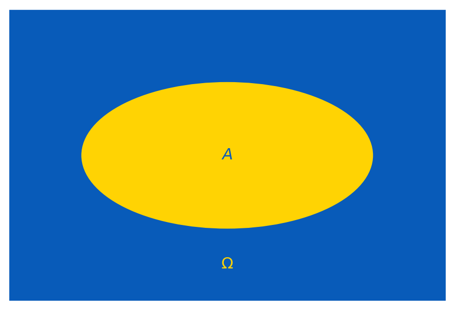
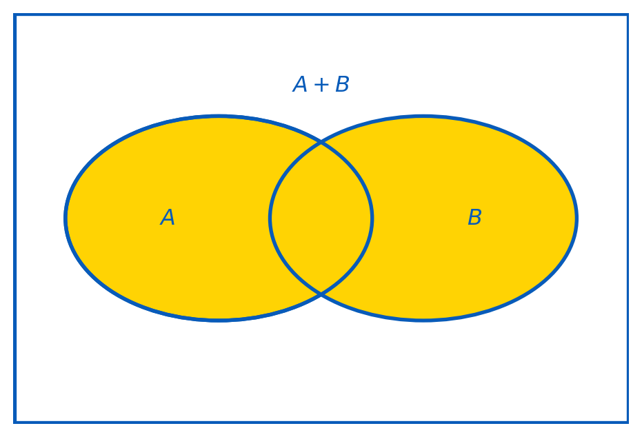
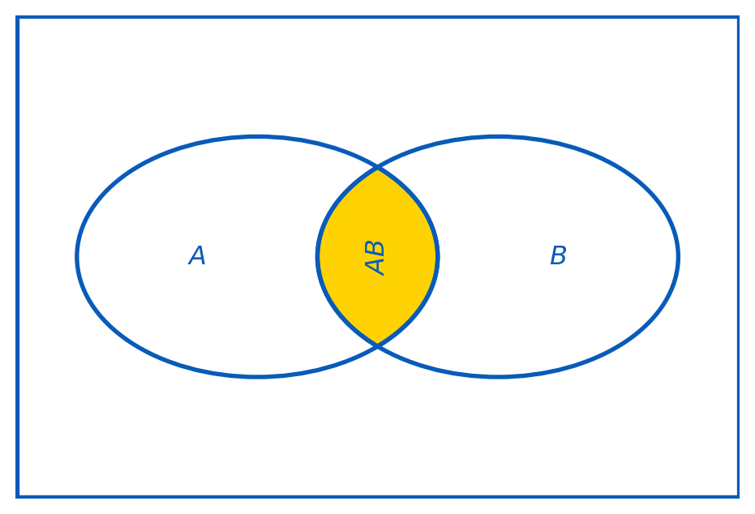
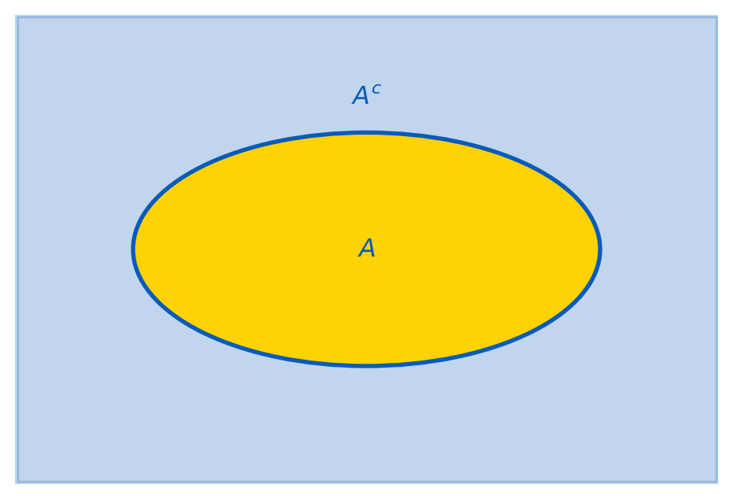
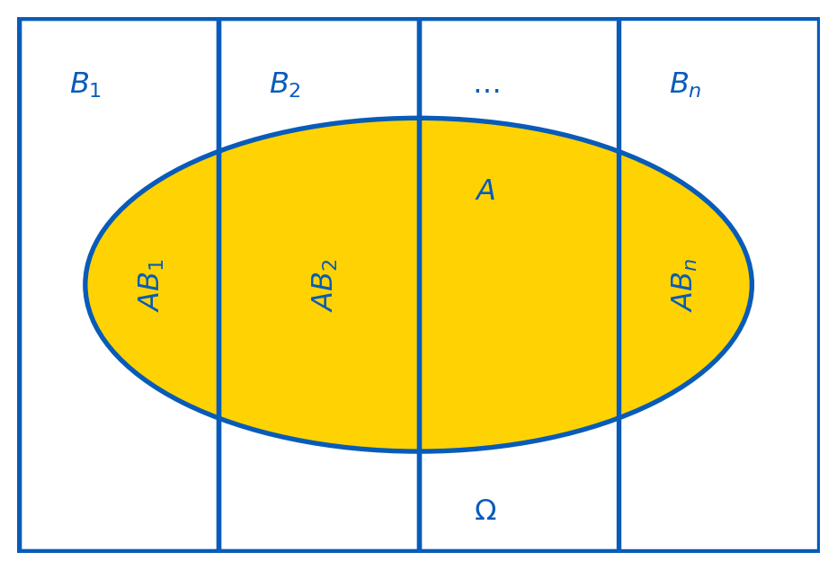
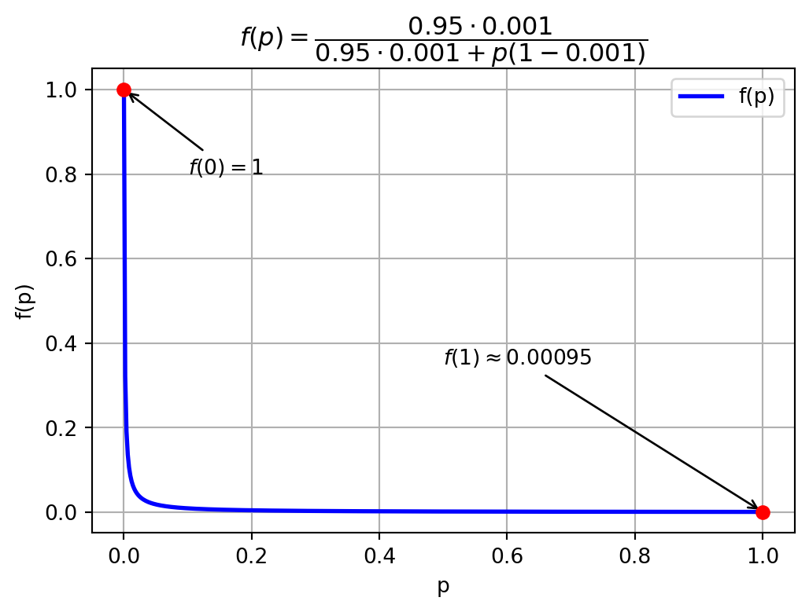

Topic 2 — Basic Concepts and Rules of Probability
\[ \renewcommand{\P}{\mathbb{P}} \renewcommand{\E}{\mathbb{E}} \newcommand{\R}{\mathbb{R}} \newcommand{\var}{\mathrm{Var}} \newcommand{\cov}{\mathrm{cov}} \newcommand{\corr}{\mathrm{corr}} \newcommand{\dx}{\,\mathrm{d}x} \newcommand{\dy}{\,\mathrm{d}y} \newcommand{\eps}{\varepsilon} \]
Introduction to Probability Theory
Probability Theory is a branch of mathematics that deals with uncertainty and randomness. It provides a framework for quantifying and analyzing uncertainty in stochastic experiments.
An experiment or trial is any procedure that can be infinitely repeated and has a well-defined set of possible outcomes.
An outcome (denoted by \(\omega\)) is a particular result of an experiment.
A sample space (denoted by \(\Omega\)) is the set of all possible outcomes of an experiment (i.e. \(\omega\in\Omega\)).
An event is a subset of the sample space (e.g. \(A\subset \Omega\)), representing a specific outcome or a collection of outcomes.
Probability (denoted by \(\P\)) is a measure of the likelihood of an event occurring. It assigns a number between \(0\) and \(1\) to an event, where \(0\) indicates extreme unlikelihood, and \(1\) indicates certainty that the event will occur. In particular, \[0\leq \P(A)\leq \P(\Omega) = 1.\]
Example: Tossing a Coin
When we throw a coin once, the possible outcomes are \(H, T\) (standing for ‘head’ and ‘tail’). Therefore, \(\Omega=\{H, T\}\).
There are \(4\) events one can consider: \(\{H\}, \{T\}, \{H,T\}, \emptyset\).
Example: Rolling a Die
Consider rolling a fair six-sided die. The possible outcomes are \(1,2,3,4,5,6\), so \(\Omega=\{1,2,3,4,5,6\}\).
Consider the event \(A\) of getting an even number: \(A = \{2, 4, 6\}\).
Consider the event \(B\) of getting a prime number: \(B = \{2, 3, 5\}\).
Then \(\P(A)=\P(B)=\frac12\) (think why).
Impossible Events
The event \(\emptyset\) (‘empty set’) describes an impossible event (e.g. we throw a coin or a die with no outcome). Then \[ \P(\emptyset) = 0. \]
The Discrete Case
We start our course with the discrete case, when \(\Omega\) is a finite set. To calculate the probability \(\P(A)\) of an event \(A\subset\Omega\), we use the following formula: \[ \P(A)=\dfrac{\textrm{number of outcomes that make } A}{\textrm{number of all outcomes}}=\dfrac{\sharp(A)}{\sharp(\Omega)}. \]
Example: Rolling a Die Twice
Consider rolling a fair six-sided die twice. Then outcomes are \(\omega=(a,b)\) where \(a,b\in \{1, 2, 3, 4, 5, 6\}\), i.e. \[ \Omega = \bigl\{ (a,b) \mid a,b\in \{1, 2, 3, 4, 5, 6\} \bigr\}. \] Then \(\sharp(\Omega)=6\cdot 6=36\). Let \(A\) be the event of having the sum of the numbers in the two rollings bigger than \(10\). Then \[ A=\bigl\{ (5,6), (6,5), (6,6) \bigr\}. \] Therefore, \[ \P(A)=\frac{3}{36}=\frac1{12}. \]
(The same technique was also illustrated live with the event “the sum equals exactly 10” — see Suggestions-Ch-02.md — which gives the same probability \(\tfrac{1}{12}\) via the different set \(\{(4,6),(6,4),(5,5)\}\).)
Example: Drawing a Card
Consider drawing a card from a standard deck of \(52\) playing cards. The sample space \(\Omega\) is the set of all \(52\) pairs of the form \(vS\), where \(v\in\{A, 2, 3, 4, \ldots, 10, J, Q, K\}\) is the value of a card, and \(S\in\{\clubsuit,{\color{red}\diamondsuit}, \spadesuit, {\color{red}\heartsuit}\}\) is the card suit.
Let \(B\) be the event of drawing a red face card. Then \[ B=\{J{\color{red}\diamondsuit}, Q{\color{red}\diamondsuit}, K{\color{red}\diamondsuit}, J{\color{red}\heartsuit}, Q{\color{red}\heartsuit}, K{\color{red}\heartsuit}\}, \] and hence, \[ \P(B)=\frac{6}{52}=\frac{3}{26}. \]
Rules of Probability
We now turn to the algebra of events: combining, comparing, and conditioning on events.
The Sum and Product of Events
The sum of events \(A\) and \(B\) is the event \(A+B\) (also denoted \(A\cup B\) or \(A\vee B\)) which occurs iff either \(A\) occurs or \(B\) occurs or they both occur.

The product of events \(A\) and \(B\) is the event \(AB\) (also denoted \(A\cap B\) or \(A\wedge B\)) which occurs iff both \(A\) and \(B\) occur.

Comparing \(A+B\) and \(AB\) with \(A\), \(B\)
\(A+B\) occurs under more outcomes than either of \(A\) or \(B\) alone: \[ \P(A+B) \geq \P(A), \quad \P(A+B) \geq \P(B). \]
\(AB\) occurs under less outcomes than each of \(A\) or \(B\) alone: \[ \P(AB) \leq \P(A), \quad \P(AB) \leq \P(B). \]
The Addition Rule
The addition rule states that \[ \P(A + B) = \P(A) + \P(B) - \P(A B). \] It can be easily interpreted using the visual representations of \(\P(A + B)\) and \(\P(AB)\).
There is a standard deck of \(52\) playing cards. Find the probability of drawing either a red card or a face card (king, queen, or jack) from the deck in a single draw.
Solution: Let \(A\) be the event of drawing a red card, and \(B\) be the event of drawing a face card. Overall, there are \(26\) red cards, \(12\) face cards, and \(6\) red face cards. Therefore, \[ \P(A+B)=\frac{26}{52}+\frac{12}{52}-\frac{6}{52}=\frac{32}{52}=\frac{8}{13}. \]
Mutually Exclusive Events
Events \(A\) and \(B\) are called mutually exclusive events if only one of them may happen, i.e. if \(AB=\emptyset\). In this case \(\P(AB)=0\), and the addition rule takes the form \[ \P(A+B)=\P(A)+\P(B). \]
The Complement of an Event
The complement to an event \(A\) is the event \(A^c\) which occurs iff \(A\) does not occur. Since \(\P(\Omega)=1\), one has \[ \P(A^c)=1-\P(A). \]

A fair six-sided die is rolled three times. Find the probability that the total score (the sum of three trials) will be at least \(4\) (event \(A\)).
Solution: The sample space \(\Omega\) consists of all triples \((a,b,c)\) with \(a,b,c\in\{1,2,\ldots,6\}\). Thus, \(\sharp(\Omega)=6^3=216\). The total score is \(4\) or more in all cases but the case \((1,1,1)\). Therefore, the answer is: \[ \P(A) = 1-\P(A^c)=1-\frac{1}{216}=\frac{215}{216}. \]
Conditional Probability
Conditional probability \(\P(A\mid B)\) is the probability of an event \(A\) occurring given that event \(B\) has already occurred, so we assume that \(\P(B)\neq0\). The formula is \[ \P(A\mid B) = \frac{\P(AB)}{\P(B)}. \]

Example: Drawing Marbles from a Bag
In a bag of \(20\) marbles, \(8\) are red, and \(12\) are green. Three marbles are drawn from the bag without replacement. What is the probability that they all are of the same colour?
Solution: we need the probability that either \(A=(r,r,r)\) or \(B=(g,g,g)\) holds. Note that \(A\) and \(B\) are mutually exclusive events. By the multiplication rule, \[ \P(A) = \frac{8}{20}\cdot\frac{7}{19}\cdot\frac{6}{18}, \] and \[ \P(B) = \frac{12}{20}\cdot\frac{11}{19}\cdot\frac{10}{18}. \]
Therefore, by the addition rule (for mutually exclusive events), \[ \P(A+B)=\P(A)+\P(B)=\frac{8\cdot 7\cdot 6}{20\cdot 19\cdot 18}+\frac{12\cdot 11\cdot 10}{20\cdot 19\cdot 18}=\frac{1656}{6840}=\frac{23}{95}. \]
The Multiplication Rule
The multiplication rule follows immediately from the formula for the conditional probability: \[ \P(AB) = \P(B)\, \P(A\mid B) = \P(A)\, \P(B\mid A). \]
The multiplication rule can be generalised for the product of several events, e.g. \[ \P(ABC) = \P(A) \, \P(B\mid A)\,\P(C\mid AB). \]
Independence of Events
An event \(A\) is said to be independent of an event \(B\) if the occurrence of \(B\) does not affect the probability of occurrence of \(A\). In other words, \(A\) is independent of \(B\) iff \[ \P(A\mid B) = \P(A). \]
A fair coin is tossed twice. Let \(A\): a head appeared in the first toss, and \(B\): a tail appeared in the second toss. Then \(A\) and \(B\) are independent: \(A=\{HH,HT\}\), \(B=\{HT,TT\}\), and hence \(AB=\{HT\}\), giving \(\P(AB)=\frac14=\frac12\cdot\frac12=\P(A)\P(B)\).
If \(A\) is independent of \(B\) then \(B\) is independent of \(A\), and \[ \P(AB)=\P(A)\,\P(B). \]
If three (or more) events are pairwise independent — \(A\) and \(B\) independent, \(B\) and \(C\) independent, \(A\) and \(C\) independent — it still may be that they are not independent in total, and then, in general, \(\P(ABC)\neq\P(A)\P(B)\P(C)\).
The Law of Total Probability

Let \(B_1,\ldots,B_n\) be pairwise exclusive events (i.e. \(B_iB_j=\emptyset\) for all \(i\neq j\)) such that \(B_1+B_2+\ldots+B_n=\Omega\) with \(\P(B_i)\neq0\) (it is said then that \(B_1,\ldots,B_n\) form a partition of \(\Omega\)). Then the law of total probability holds: \[ \P(A)=\P(A\mid B_1)\,\P(B_1)+\ldots+\P(A\mid B_n)\,\P(B_n). \]
There is also a modification of the law of total probability for conditional probabilities. If \(B_1,\ldots,B_n\) are as above and \(\P(C)\neq0\), then \[ \P(A\mid C) = \P(A\mid B_1 C)\P(B_1\mid C)+ \ldots + \P(A\mid B_n C)\P(B_n\mid C). \]
Bayes’ Rule
From the conditional-probability definition, \[ \P(B) \P(A\mid B) = \P(AB)=\P(BA)=\P(A)\P(B\mid A). \] This implies the following important statement.
Let \(\P(A)\neq0\) and \(\P(B)\neq0\). Then Bayes’ rule (a.k.a. Bayes’ formula or Bayes’ theorem) holds: \[ \P(A\mid B) = \frac{\P(A)\P(B\mid A)}{\P(B)}. \] It describes the a posteriori probability of the event \(A\), after an experiment with the known outcome \(B\), using the a priori information about the outcome \(B\).
If \(A_1,\ldots,A_n\) form a partition of \(\Omega\) (i.e. \(A_1+\ldots+A_n=\Omega\) and \(A_iA_j=\emptyset\) for \(i\neq j\)) with \(\P(A_j)\neq0\), then we can rewrite Bayes’ rule as follows, for \(\P(B)\neq0\): \[ \P(A_i\mid B) = \dfrac{\P(A_i)\P(B\mid A_i)}{\displaystyle\sum_{j=1}^n\P(B\mid A_j)\P(A_j)}. \]
Example: A Disease Test (Bayes’ Rule)
A patient has taken a test for a rare disease. The prevalence of the disease in the population is known to be very low, only \(0.1\)%. The test correctly identifies the disease in \(95\)% of cases when it’s present. The test incorrectly indicates the presence of the disease in \(3\)% of cases where it’s not actually present. The patient has just received a positive test result for the disease. What is the probability that he actually has the disease?
Solution: Let \(D\) denote the event of having the disease, \(\P(D) = 0.001\) (\(0.1\)%). Let \(T\) denote the event of a positive test result. Then \[ \P(T|D) = 0.95, \qquad \P(T|D^c) = 0.03. \] By definition, \(D\) and \(D^c\) form a partition of \(\Omega\). Then \[ \P(D|T) = \frac{\P(T|D) \cdot \P(D)}{\P(T|D) \cdot \P(D) + \P(T|D^c) \cdot \P(D^c)} = \frac{0.95 \cdot 0.001}{0.95 \cdot 0.001 + 0.03 \cdot 0.999} \approx 0.0306. \] So, given a positive test result, the probability that the patient actually has the disease is just \(3.06\)%.
Sensitivity to the False-Positive Rate
The result is quite small because the false-positive rate (\(3\)%) is quite high relative to the disease prevalence. Fixing prevalence at \(0.1\)% and sensitivity at \(95\)%, consider \(\P(D\mid T)\) as a function \(f(p)\) of the false-positive rate \(p\in[0,1]\): \[ f(p) = \frac{0.95 \cdot 0.001}{0.95 \cdot 0.001 + {\color{red}p} \cdot 0.999}. \] Clearly \(f(0)=1\) and \(f(1)\approx 0.00095\). As \(p\) increases, \(f(p)\) decreases — so to get a high probability that the patient actually has the disease given a positive result, the test needs a very small false-positive rate.
